← 返回阅读库 · 原论文目录
论文讲解阅读文档 · 论文精读 · v229
一个视频看懂AI作图背后的技术革命
视频时长 00:10:42；讲解文字 3,892 字符；提取讲解画面 141 张。按视频原顺序阅读，每段文字保留时间戳。
文字来自整段视频的自动语音转写，按自然停顿分段，并与 PPT / 论文页面 / 演示画面对齐。未将讲解压缩为摘要；术语、数字和口述公式请结合画面及原论文核对。 阅读稿已校正规范部分明确术语误识别；原始逐字稿和每处修改记录另行保留。
讲解画面为源视频截图（640×360），不是可编辑 PPT 文件。全片按每秒 2 帧扫描内容变化，逐步展开页保留；连续动画保留代表画面。清晰度受源视频限制。
下载完整资料包 · 含离线 HTML、PDF、Word、全部 PPT 画面和字幕。
原论文与材料
Scaling Rectified Flow Transformers for High-Resolution Image Synthesis · 下载完整 PDF（28 页）
Scalable Diffusion Models with Transformers · 下载完整 PDF（25 页）
Dynamic Diffusion Transformer · 下载完整 PDF（31 页）
按时间阅读
00:00:00–00:00:04 · 画面 001
00:00:00–00:00:04 · 画面 001最近全网都在刷 Nanobanana，不知道屏幕前的你有没有用过？能把照片改成手办，甚至记住角色特征反复编辑。这个 AI 修图魔法的背后，藏着一个关键的技术 MMDIT。为什么谷歌敢用一根香蕉代号，横扫图像生成领域？传统的扩散模型改图时，背景崩坏，角色两盲的问题，如何被 MMDIT 轻松解决？今天我们要用人画带大家看懂 Nanobanana 的底层技术。
00:00:04–00:00:07 · 画面 002
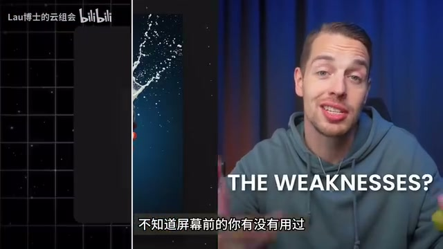
00:00:04–00:00:07 · 画面 00200:00:07–00:00:08 · 画面 003
00:00:07–00:00:08 · 画面 00300:00:08–00:00:10 · 画面 004
00:00:08–00:00:10 · 画面 00400:00:10–00:00:12 · 画面 005
00:00:10–00:00:12 · 画面 00500:00:12–00:00:16 · 画面 006
00:00:12–00:00:16 · 画面 00600:00:16–00:00:18 · 画面 007
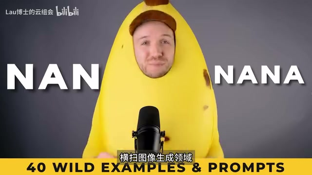
00:00:16–00:00:18 · 画面 00700:00:18–00:00:19 · 画面 008
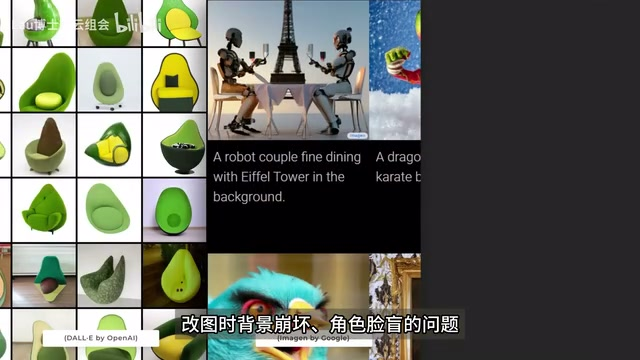
00:00:18–00:00:19 · 画面 00800:00:19–00:00:23 · 画面 009
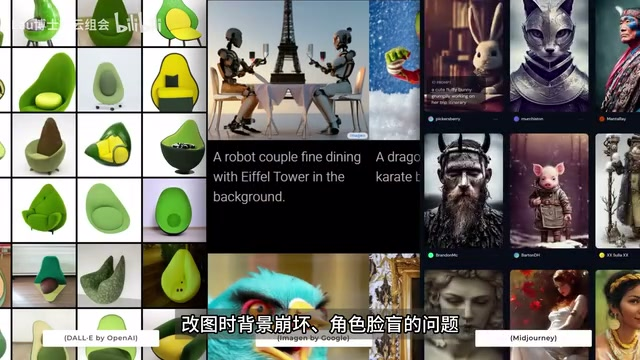
00:00:19–00:00:23 · 画面 00900:00:23–00:00:27 · 画面 010
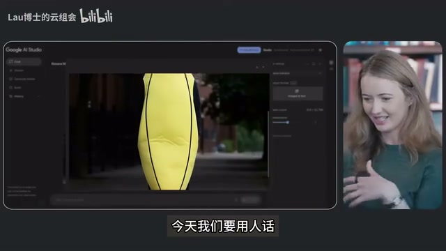
00:00:23–00:00:27 · 画面 010从改写图像生成领域的 DIT 模型到升级版的 MMDiT 多模态架构，深入挖掘 AI 作图背后的秘密，云组会论文精读系列：图像生成之王 DIT 架构。欢迎来到力武博士的云组会，我们每周都将至少有一篇高质量的论文精读发布出来。相信在一系列的论文学习以后，你就能成为人工智能领域的专家。要理解 nano banana 的强大，我们得先从它的技术前辈说起。
00:00:27–00:00:29 · 画面 011
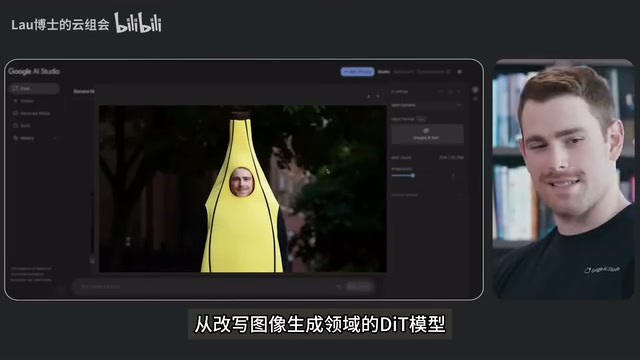
00:00:27–00:00:29 · 画面 01100:00:29–00:00:31 · 画面 012
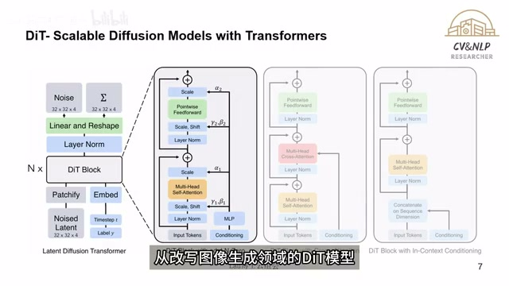
00:00:29–00:00:31 · 画面 01200:00:31–00:00:33 · 画面 013
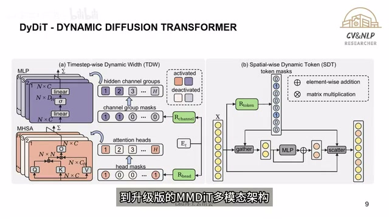
00:00:31–00:00:33 · 画面 01300:00:33–00:00:37 · 画面 014
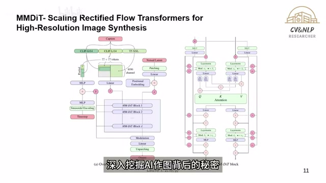
00:00:33–00:00:37 · 画面 01400:00:37–00:00:41 · 画面 015
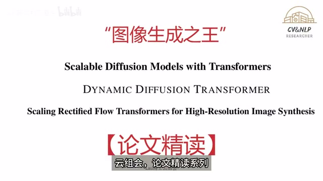
00:00:37–00:00:41 · 画面 01500:00:41–00:00:45 · 画面 016
00:00:41–00:00:45 · 画面 01600:00:45–00:00:49 · 画面 017
00:00:45–00:00:49 · 画面 01700:00:49–00:00:53 · 画面 018
00:00:49–00:00:53 · 画面 01800:00:53–00:00:55 · 画面 019
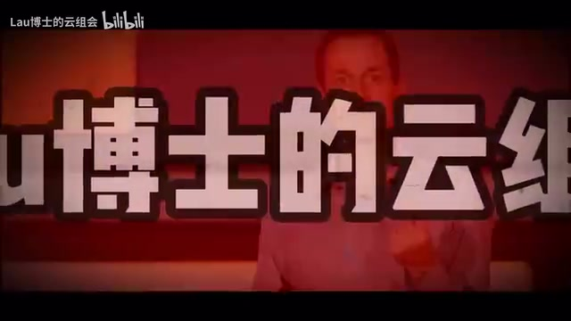
00:00:53–00:00:55 · 画面 01900:00:55–00:00:59 · 画面 020
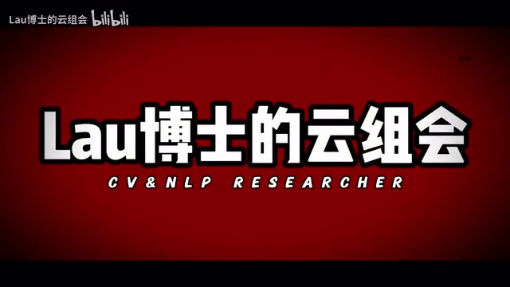
00:00:55–00:00:59 · 画面 02000:00:59–00:01:03 · 画面 021
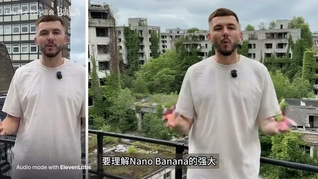
00:00:59–00:01:03 · 画面 021传统的扩散模型在修图的时候，经常会遇到两个棘手的问题。一是背景崩坏，比如修改人物的服装颜色的时候，周围的墙壁家具颜色也会莫名的变化。二是角色脸盲，多次编辑以后人物的脸部特征会逐步的走样，甚至变成完全陌生的样子。而 nano banana 之所以能解决这些问题，核心就在于 MMDIT 的架构对多模态信息的精准把控。
00:01:03–00:01:07 · 画面 022
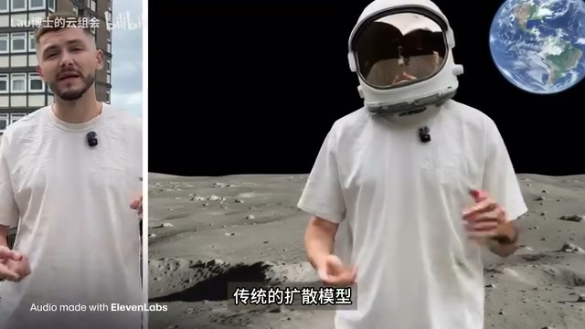
00:01:03–00:01:07 · 画面 02200:01:07–00:01:11 · 画面 023
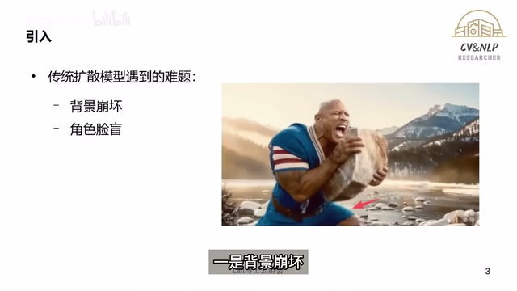
00:01:07–00:01:11 · 画面 02300:01:11–00:01:15 · 画面 024
00:01:11–00:01:15 · 画面 02400:01:15–00:01:19 · 画面 025
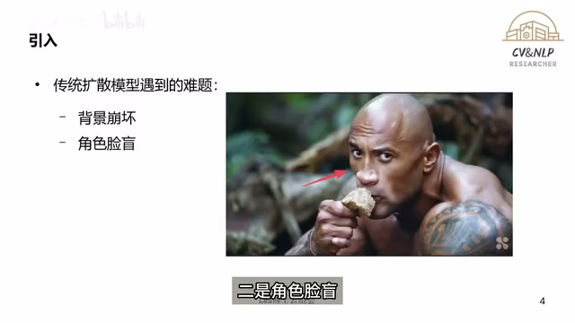
00:01:15–00:01:19 · 画面 02500:01:19–00:01:23 · 画面 026
00:01:19–00:01:23 · 画面 02600:01:23–00:01:27 · 画面 027
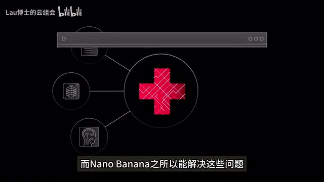
00:01:23–00:01:27 · 画面 02700:01:27–00:01:31 · 画面 028
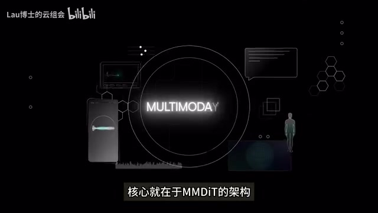
00:01:27–00:01:31 · 画面 028它能同时理解图像的视觉特征比如角色的轮廓、色彩和文本的语义信息
00:01:31–00:01:35 · 画面 029
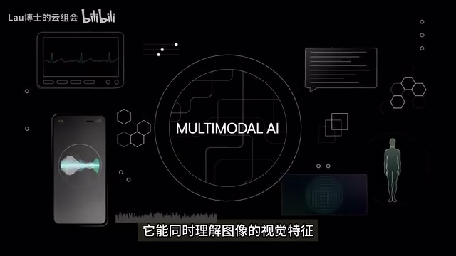
00:01:31–00:01:35 · 画面 02900:01:35–00:01:38 · 画面 030
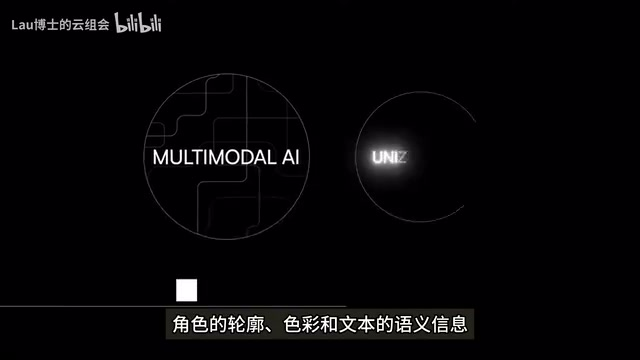
00:01:35–00:01:38 · 画面 030比如手棒的风格保留红色帽子的这类指令，并让两者在生成的过程当中持续的互动。不过 MMDIT 并非凭空出现，它的技术源自于另外一篇改写图像生成领域的重磅论文 DIT。接下来我们将从 DIT 入手，一步步拆解 AI 做图背后的技术演进逻辑。在 DIT 出现之前，扩散模型的主流架构是 U-Net。
00:01:38–00:01:42 · 画面 031
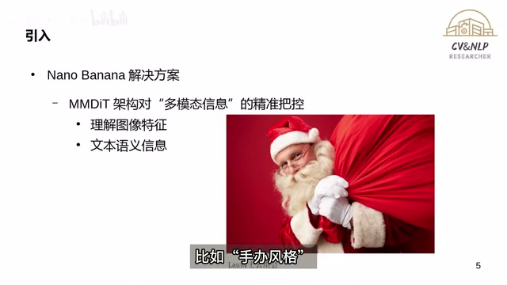
00:01:38–00:01:42 · 画面 03100:01:42–00:01:46 · 画面 032
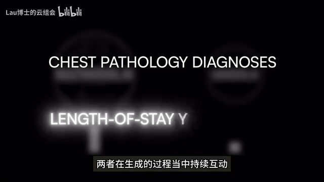
00:01:42–00:01:46 · 画面 03200:01:46–00:01:47 · 画面 033
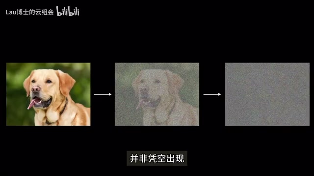
00:01:46–00:01:47 · 画面 03300:01:47–00:01:48 · 画面 034
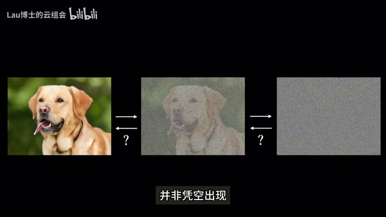
00:01:47–00:01:48 · 画面 03400:01:48–00:01:51 · 画面 035
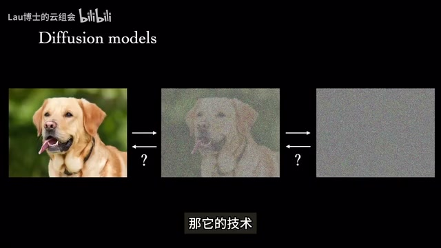
00:01:48–00:01:51 · 画面 03500:01:51–00:01:53 · 画面 036
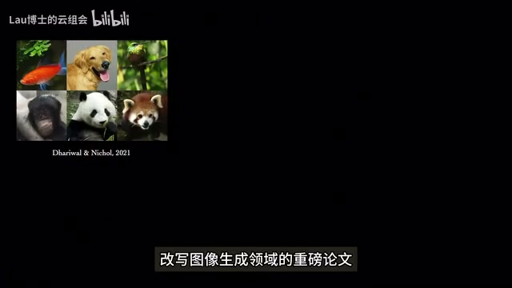
00:01:51–00:01:53 · 画面 03600:01:53–00:01:55 · 画面 037
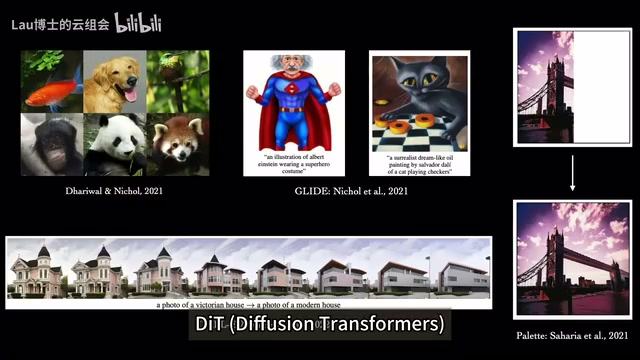
00:01:53–00:01:55 · 画面 03700:01:55–00:01:57 · 画面 038
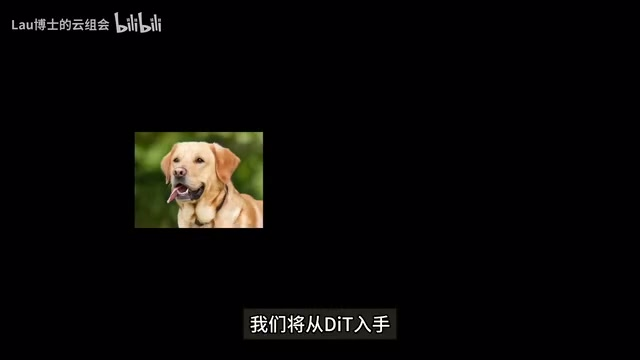
00:01:55–00:01:57 · 画面 03800:01:57–00:01:59 · 画面 039
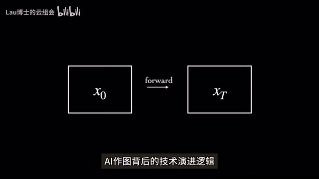
00:01:57–00:01:59 · 画面 03900:01:59–00:02:01 · 画面 040
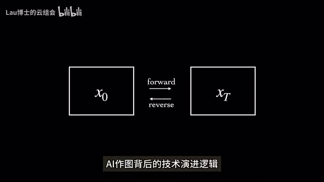
00:01:59–00:02:01 · 画面 04000:02:01–00:02:03 · 画面 041
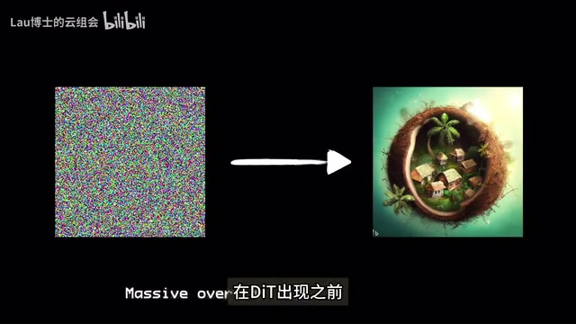
00:02:01–00:02:03 · 画面 04100:02:03–00:02:07 · 画面 042
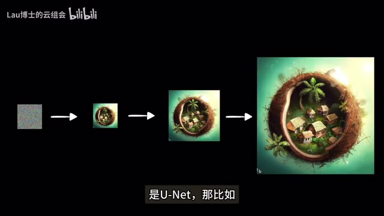
00:02:03–00:02:07 · 画面 042比如 Stable Diffusion 的早期版本，但原生的 U-Net 存在着一个明显的短板，CNN 的架构欠缺类似 Transformer 的长距离依赖建模能力，导致生成高分辨率的图像时细节粗糙。而在两年前，谢赛宁团队发表 DIT 论文，首次将 Transformer 与扩散模型深度结合，提出扩散 Transformer 架构，彻底改变了这一局面。DIT 的核心设计可以概括为用 Transformer 重构扩散模型的骨干网络。
00:02:07–00:02:08 · 画面 043
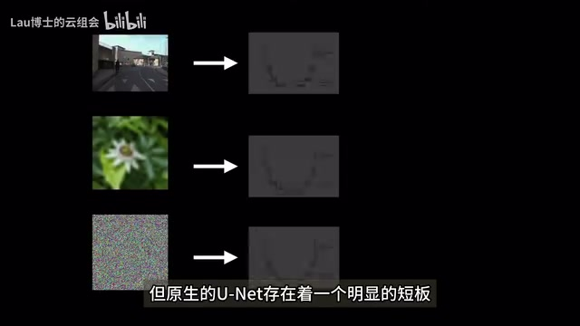
00:02:07–00:02:08 · 画面 04300:02:08–00:02:12 · 画面 044
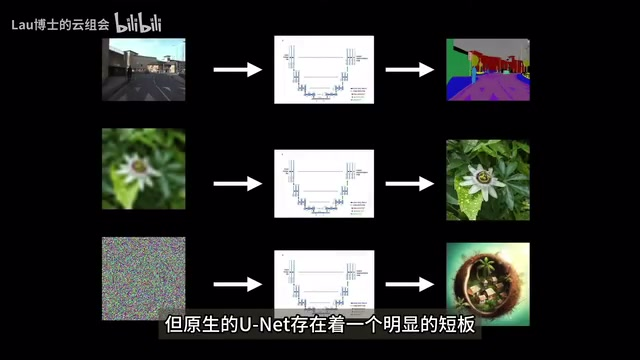
00:02:08–00:02:12 · 画面 04400:02:12–00:02:16 · 画面 045
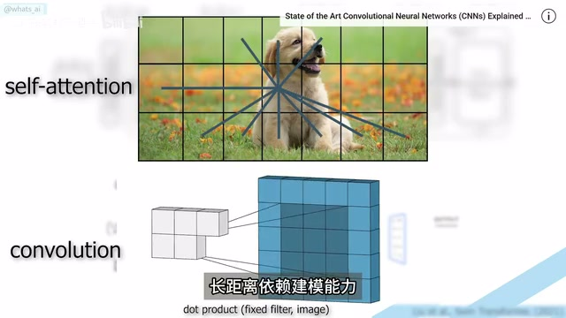
00:02:12–00:02:16 · 画面 04500:02:16–00:02:18 · 画面 046
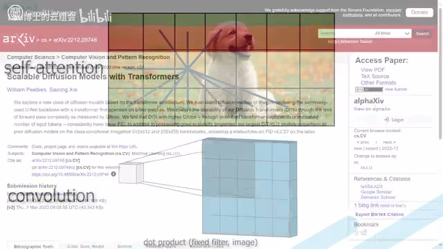
00:02:16–00:02:18 · 画面 04600:02:18–00:02:22 · 画面 047
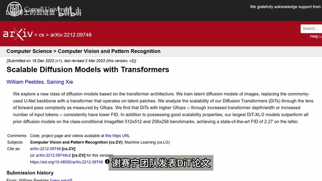
00:02:18–00:02:22 · 画面 04700:02:22–00:02:24 · 画面 048
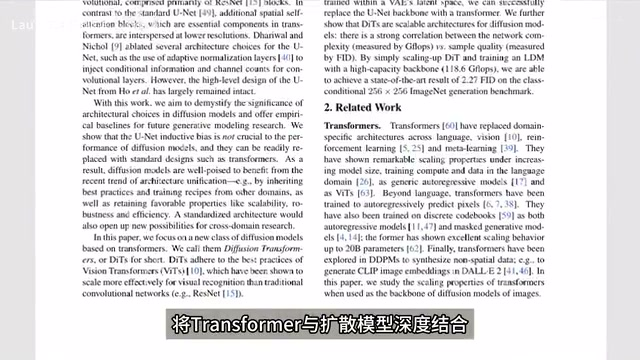
00:02:22–00:02:24 · 画面 04800:02:24–00:02:25 · 画面 049
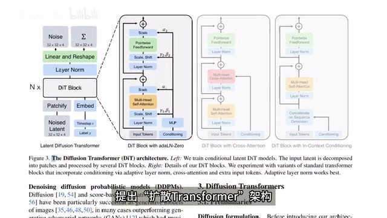
00:02:24–00:02:25 · 画面 04900:02:25–00:02:28 · 画面 050
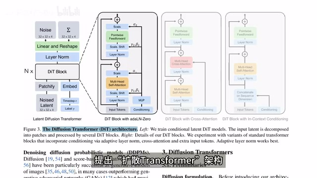
00:02:25–00:02:28 · 画面 05000:02:28–00:02:32 · 画面 051
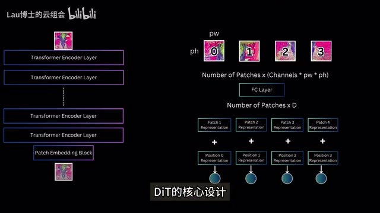
00:02:28–00:02:32 · 画面 05100:02:32–00:02:33 · 画面 052
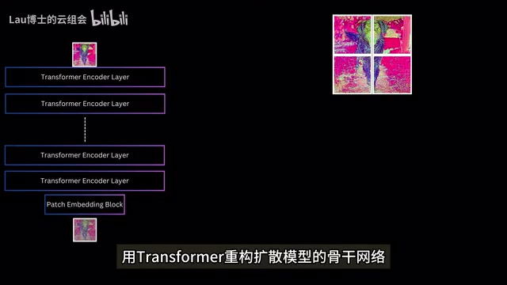
00:02:32–00:02:33 · 画面 052他借鉴了 VIT 的思路，先将图像分割成小 Patch，再将这些 Patch 转化为向量序列输到 Transformer 层中进行处理。
00:02:33–00:02:35 · 画面 053
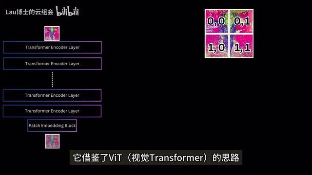
00:02:33–00:02:35 · 画面 05300:02:35–00:02:37 · 画面 054
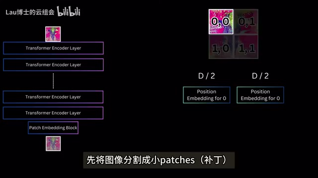
00:02:35–00:02:37 · 画面 05400:02:37–00:02:41 · 画面 055
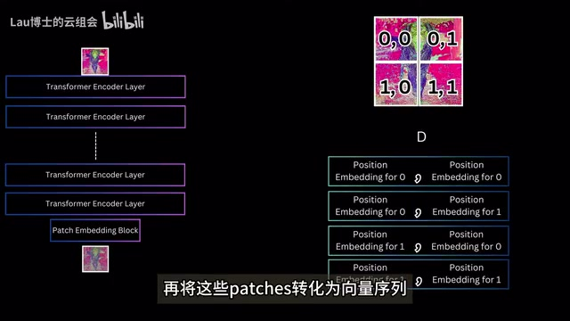
00:02:37–00:02:41 · 画面 05500:02:41–00:02:44 · 画面 056
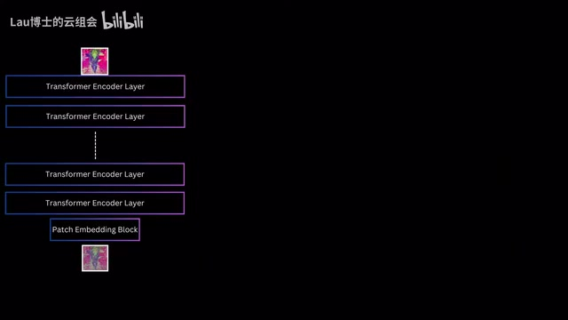
00:02:41–00:02:44 · 画面 056与传统的 U-Net 相比，DIT 有两个关键的优势。第一，更精准的噪声预测。DIT 通过自适应层归一化，将时间步和类别条件嵌入到 Transformer 层中，让模型根据不同的扩散阶段调整预测策略。比如在扩散的早期，噪声比较多的情况下，聚焦于整体的轮廓；而在晚期，噪声比较少的情况下，注重于优化细节。这就解决了传统模型噪声预测一刀切的问题。
00:02:44–00:02:45 · 画面 057
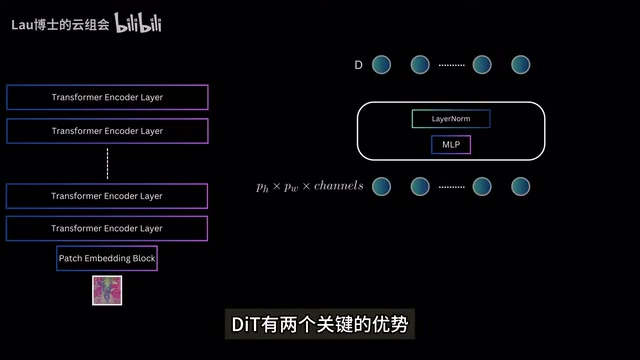
00:02:44–00:02:45 · 画面 05700:02:45–00:02:48 · 画面 058
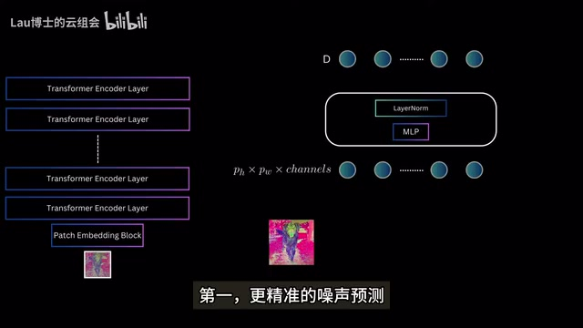
00:02:45–00:02:48 · 画面 05800:02:48–00:03:08 · 画面 059
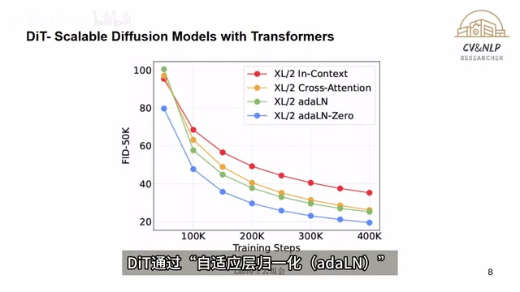
00:02:48–00:03:08 · 画面 05900:03:08–00:03:09 · 画面 060
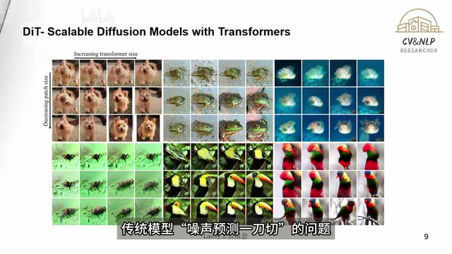
00:03:08–00:03:09 · 画面 060第二，更高效的长距离依赖建模。Transformer 的自注意机制能够让模型同时关注图像的所有区域。比如生成带斑点的猫时，DIT 能确保全身的斑点风格统一，而传统的 U-Net 容易会出现局部斑点不一致的情况。不过早期的 DIT 也有局限，它主要是针对类别条件生成，比如给定猫的类别生成猫的图像，无法直接处理文本图像这样的多模态任务。
00:03:09–00:03:13 · 画面 061
00:03:09–00:03:13 · 画面 06100:03:13–00:03:14 · 画面 062
00:03:13–00:03:14 · 画面 06200:03:14–00:03:18 · 画面 063
00:03:14–00:03:18 · 画面 06300:03:18–00:03:22 · 画面 064
00:03:18–00:03:22 · 画面 06400:03:22–00:03:26 · 画面 065
00:03:22–00:03:26 · 画面 06500:03:26–00:03:31 · 画面 066
00:03:26–00:03:31 · 画面 06600:03:31–00:03:32 · 画面 067
00:03:31–00:03:32 · 画面 06700:03:32–00:03:35 · 画面 068
00:03:32–00:03:35 · 画面 06800:03:35–00:03:37 · 画面 069
00:03:35–00:03:37 · 画面 069而且在生成的过程当中存在着静态的计算冗余，无论扩散到哪个阶段，图像的哪个区域都用相同的模型的宽度和计算资源，导致推理速度慢，显存占用高。这也为后续的改进工作留下了空间。2024 年 DyDiT 针对这个问题提出了动态计算方案，进一步释放了 DIT 的潜力。
00:03:37–00:03:39 · 画面 070
00:03:37–00:03:39 · 画面 07000:03:39–00:03:40 · 画面 071
00:03:39–00:03:40 · 画面 07100:03:40–00:03:42 · 画面 072
00:03:40–00:03:42 · 画面 07200:03:42–00:03:45 · 画面 073
00:03:42–00:03:45 · 画面 07300:03:45–00:03:47 · 画面 074
00:03:45–00:03:47 · 画面 07400:03:47–00:03:51 · 画面 075
00:03:47–00:03:51 · 画面 07500:03:51–00:03:52 · 画面 076
00:03:51–00:03:52 · 画面 07600:03:52–00:03:53 · 画面 077
00:03:52–00:03:53 · 画面 07700:03:53–00:03:57 · 画面 078
00:03:53–00:03:57 · 画面 07800:03:57–00:04:05 · 画面 079
00:03:57–00:04:05 · 画面 079DyDiT 的核心洞察来自于对 DIT 训练过程中的两个关键发现，一是时间维度的冗余，不同扩散的时间步的噪声预测的难度差异很大。
00:04:05–00:04:06 · 画面 080
00:04:05–00:04:06 · 画面 08000:04:06–00:04:09 · 画面 081
00:04:06–00:04:09 · 画面 08100:04:09–00:04:24 · 画面 082
00:04:09–00:04:24 · 画面 082比如像图 1A 所示，在扩散的后期，小模型和大模型的损失差异几乎可以忽略，说明这个阶段不需要用全尺寸的模型，用小模型就能够完成任务。而扩散在早期则需要大模型的完整能力。但传统的 DIT 在所有的时间步都用相同宽度的模型，造成了大量的冗余计算。
00:04:24–00:04:34 · 画面 083
00:04:24–00:04:34 · 画面 08300:04:34–00:04:35 · 画面 084
00:04:34–00:04:35 · 画面 084二是空间维度的冗余，图像不同的区域的噪声预测的难度也不同。比如像图一比所示，角色、物体等核心区域的损失值都会更高，也就意味着预测的难度更大；而背景空白的区域的损失值是比较低的，也就意味着预测的难度是较小的。传统的 DIT 对所有的区域的 patch 的分配都是相同的计算资源，导致背景的区域的计算就浪费了。
00:04:35–00:04:43 · 画面 085
00:04:35–00:04:43 · 画面 08500:04:43–00:04:47 · 画面 086
00:04:43–00:04:47 · 画面 08600:04:47–00:05:00 · 画面 087
00:04:47–00:05:00 · 画面 08700:05:00–00:05:01 · 画面 088
00:05:00–00:05:01 · 画面 088针对这两个问题，DyDiT 提出了两大创新模块，第一个是时间步动态宽度 TDW，根据当前的 Time Step 的难度动态的调整 Transformer 层中的注意力头和 MLP 通道组的激活数量。比如在扩散的后期只激活 30%的注意力头和通道组，在早期就要激活 90%以上。
00:05:01–00:05:12 · 画面 089
00:05:01–00:05:12 · 画面 08900:05:12–00:05:16 · 画面 090
00:05:12–00:05:16 · 画面 09000:05:16–00:05:35 · 画面 091
00:05:16–00:05:35 · 画面 091TDW 的关键是用一个轻量级的路由器根据 Time Step 的嵌入预测激活掩码，而且掩码是可以离线预计算的，完全不增加推理时的额外开销。第二 ，空间动态令牌 SDT 对图像的 Patch 进行难度判断，让低难度的 Patch 比如像背景直接跳过计算密集的 MLP 层，只保留多头注意力层，维持全局的观念。
00:05:35–00:05:36 · 画面 092
00:05:35–00:05:36 · 画面 09200:05:36–00:06:11 · 画面 093
00:05:36–00:06:11 · 画面 093SDT 通过另一个路由器预测每个 Patch 的处理概率用 0.5 的阈值生成二进制的掩码指对高难度的 Patch 执行 MLP 的计算进一步减少冗余更重要的是 DyDiT 的动态策略是硬件友好的，不需要为每个样本调整计算图，支持了批量的推理，这为后续的工程化应用，比如 NanoBanana 的实时修图提供了可能。如果说 DyDiT 解决了如何高效生成高质量图像的问题，那么 MMDIT 则是解决了如何让图像生成精准响应文本指令的关键问题，这正是 NanoBanana 能够实现修图不敛盲背景不崩坏的核心。
00:06:11–00:06:15 · 画面 094
00:06:11–00:06:15 · 画面 09400:06:15–00:06:18 · 画面 095
00:06:15–00:06:18 · 画面 09500:06:18–00:06:20 · 画面 096
00:06:18–00:06:20 · 画面 09600:06:20–00:06:22 · 画面 097
00:06:20–00:06:22 · 画面 09700:06:22–00:06:23 · 画面 098
00:06:22–00:06:23 · 画面 09800:06:23–00:06:26 · 画面 099
00:06:23–00:06:26 · 画面 09900:06:26–00:06:30 · 画面 100
00:06:26–00:06:30 · 画面 100MMDIT 来自 2024 年发表的 Stable Diffusion 3 的论文，它是在 DIT 的架构的基础上，针对文本图像多模态任务做的三大关键升级，一是双模态独立权重加双向信息流动。
00:06:30–00:06:34 · 画面 101
00:06:30–00:06:34 · 画面 10100:06:34–00:06:38 · 画面 102
00:06:34–00:06:38 · 画面 10200:06:38–00:06:56 · 画面 103
00:06:38–00:06:56 · 画面 103传统的文本图像扩散模型通常会将文本嵌入了，通过交叉注意力输入到图像的 Transformer 当中，但文本和图像共享一套权重，导致两种模态的信息没有办法充分的发挥优势。MMDiT 就是为文本和图像分别设计了独立的 Transformer 的权重，同时注意力层将两者的 Token 的序列拼接，让文本能够指导图像的生成，图像也能反馈视觉的细节给文本。
00:06:56–00:06:58 · 画面 104
00:06:56–00:06:58 · 画面 10400:06:58–00:07:18 · 画面 105
00:06:58–00:07:18 · 画面 105比如红色的帽子的视觉特征会强化文本当中红色的语义，彻底解决了文本指令与图像生成脱节的问题。二是多文本编码器的融合，提升指令理解的精度。MMDiT 没有依赖单一的文本模型，而是融合了两种主流的文本编码器的输出 Clip 和 T5。
00:07:18–00:07:20 · 画面 106
00:07:18–00:07:20 · 画面 10600:07:20–00:07:36 · 画面 107
00:07:20–00:07:36 · 画面 107其中 Clip 系列的编码器负责捕捉视觉相关语义 T5 负责解析细节指令实验证明这种融合能够让模型在指令跟随的任务上表现大幅提升比如在 GenEval 的基准中 MMDIT 在 depth 等于 38 的条件下的整体得分达到了 0.74 超过了 DALL-E 3 的 0.67 这也是 nano banana 能够精准执行修图指令的关键
00:07:36–00:07:38 · 画面 108
00:07:36–00:07:38 · 画面 10800:07:38–00:07:50 · 画面 109
00:07:38–00:07:50 · 画面 10900:07:50–00:07:55 · 画面 110
00:07:50–00:07:55 · 画面 11000:07:55–00:07:56 · 画面 111
00:07:55–00:07:56 · 画面 111三是高分辨率的生成优化 QK 归一化与分辨率自适应的时间步。在生成高分辨率的图像的时候，传统的模型容易出现训练部稳定和细节模糊的问题。MMDIT 通过两个优化解决了，第一个是 QK 归一化，防止注意力权重异常的增长导致了训练崩溃，第二个是分辨率自适应的时间步，根据图像分辨率调整扩散时间步的分布。
00:07:56–00:08:01 · 画面 112
00:07:56–00:08:01 · 画面 11200:08:01–00:08:05 · 画面 113
00:08:01–00:08:05 · 画面 11300:08:05–00:08:06 · 画面 114
00:08:05–00:08:06 · 画面 11400:08:06–00:08:15 · 画面 115
00:08:06–00:08:15 · 画面 11500:08:15–00:08:19 · 画面 116
00:08:15–00:08:19 · 画面 11600:08:19–00:08:32 · 画面 117
00:08:19–00:08:32 · 画面 117比如高分辨率的图像就需要更多的噪声来覆盖细节，因此会将时间步向高噪声阶段偏移，确保生成的细节不会被过度的平滑。这些改进让 MMDiT 在实际的应用当中表现出色，在人类的偏好测试当中，8B 参数的 MMDiT 在视觉美学指令跟随排版生成三个维度上全面超过了 SDXLTexasDelta 等开源的模型，甚至优于闭源的 DALL-E 3。
00:08:32–00:08:33 · 画面 118
00:08:32–00:08:33 · 画面 11800:08:33–00:08:37 · 画面 119
00:08:33–00:08:37 · 画面 11900:08:37–00:08:41 · 画面 120
00:08:37–00:08:41 · 画面 12000:08:41–00:08:59 · 画面 121
00:08:41–00:08:59 · 画面 121而 nano banana 正是基于 mmdit 的轻量化版本保留了核心的多模态交互能力同时优化了推理速度才实现了修图不崩坏特征不丢失的模仿回顾从 dit 到 mmdit 的技术演进我们能够清晰的看到 AI 图像生成领域的三大核心突破方向这也是 nano banana 等优秀应用能落地的关键
00:08:59–00:09:00 · 画面 122
00:08:59–00:09:00 · 画面 12200:09:00–00:09:03 · 画面 123
00:09:00–00:09:03 · 画面 12300:09:03–00:09:05 · 画面 124
00:09:03–00:09:05 · 画面 12400:09:05–00:09:08 · 画面 125
00:09:05–00:09:08 · 画面 12500:09:08–00:09:11 · 画面 126
00:09:08–00:09:11 · 画面 126第一架构从 U-Net 到 Transformer 的跨越，DIT 首次证明 Transformer 的长距离依赖建模能力能够完美的适配扩散模型的噪声预测任务，解决了 U-Net 的细节粗糙扩展性差的问题，为后续的大模型奠定了基础。第二计算了从静态到动态的优化，DyDiT 的发现。
00:09:11–00:09:15 · 画面 127
00:09:11–00:09:15 · 画面 12700:09:15–00:09:27 · 画面 128
00:09:15–00:09:27 · 画面 12800:09:27–00:09:33 · 画面 129
00:09:27–00:09:33 · 画面 129扩散模型的过程当中是时间加空间的冗余通过动态的调整模型的宽度和 token 的处理策略在不损失性能的前提下大幅的提升了效率让大模型实时的推理成为了可能
00:09:33–00:09:34 · 画面 130
00:09:33–00:09:34 · 画面 13000:09:34–00:09:35 · 画面 131
00:09:34–00:09:35 · 画面 13100:09:35–00:09:39 · 画面 132
00:09:35–00:09:39 · 画面 13200:09:39–00:09:45 · 画面 133
00:09:39–00:09:45 · 画面 13300:09:45–00:09:46 · 画面 134
00:09:45–00:09:46 · 画面 134第三 模态从大模态到多模态的深度交互的升级，MMDiT 不再将文本视为辅助输入，而是让文本和图像作为平等的模态，通过独立的权重多编码器的融合双向信息的流动，实现了指令视觉的精准对齐。这不仅解决了传统模型的脸盲背景崩坏的问题，更让 AI 能够理解复杂的编辑逻辑。
00:09:46–00:09:52 · 画面 135
00:09:46–00:09:52 · 画面 13500:09:52–00:09:53 · 画面 136
00:09:52–00:09:53 · 画面 13600:09:53–00:09:57 · 画面 137
00:09:53–00:09:57 · 画面 13700:09:57–00:10:08 · 画面 138
00:09:57–00:10:08 · 画面 13800:10:08–00:10:12 · 画面 139
00:10:08–00:10:12 · 画面 139从技术落地的角度来看，这些突破带来的影响是直观的，传统 AI 修图的工具更像是拼图游戏，只能简单的替换元素，而基于 MMDiT 的工具比如像 nano banana 更像是专业的设计师，能够理解你的需求，甚至是记住你的偏好。最后我们也需要看到这些技术背后是大量的工程化优化，比如像 SD3 的论文中就提到了数据的预处理预计算的嵌入。
00:10:12–00:10:42 · 画面 140
00:10:12–00:10:42 · 画面 140以及 DyDiT 的硬件友好的设计，这些细节虽然不显眼，却是实验室技术走向大众应用的关键桥梁。
00:10:42–00:10:42 · 画面 141
00:10:42–00:10:42 · 画面 141转写与来源说明 · 0 个自动复核提示
保留 29 个原始语音片段，0 个片段触发自动复核提示。提示仅用于定位可能的术语、重复或识别问题，不等于已确认错误。
讲解画面为源视频截图（640×360），不是可编辑 PPT 文件。全片按每秒 2 帧扫描内容变化，逐步展开页保留；连续动画保留代表画面。清晰度受源视频限制。
原视频：paper/合集_2026-10-16_论文精读/一个视频看懂AI作图背后的技术革命.mp4
SHA-256：1a357f5259a8706947d9f7c7315152bc722cae9ce04c73a575e68c966fc67d4c
全文按视频语音与画面制作。原论文可从上方链接下载；完整资料包保留全文、原始逐字稿、字幕和校对记录。